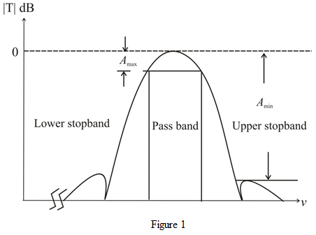

The transmission zeros of a bandpass filter are at and the other at  .
.
The filter has a monotonically decreasing passband transmission with a peak at the center frequency of .
The filter has equiripple response in the stop bands.
The transmission zeros of a bandpass filter are at and the other at .
The filter has a monotonically decreasing passband transmission with a peak at the center frequency of .
The filter has equiripple response in the stop bands.
For the band pass filter has transmission zeros at  ,, and .
,, and .
And one zero exists at each of  and
and  .
.
As there are seven transmission zeros and only one zero exists at each of and , the degree of the numerator is
.
Since, there is one zero at  , the number of poles are,
, the number of poles are,
So, the degree of the denominator is 8.
Thus, the order of the band pass filter is, .
The transfer function of the filter is of the following form:
Thus, the transfer function of the filter is,
.
The shape of is shown in Figure 1.
